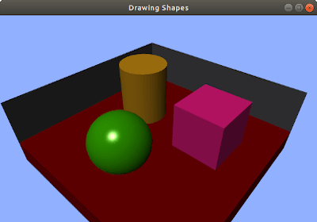
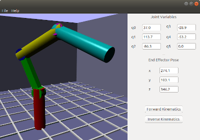

Simple and quick 2D/3D graphics engine for simulation
Robot Monitor Graphics Documentation
The founder was a mechatronic engineer and wanted to build a monitoring system for real time operating robots. When running a robot software, he wanted to visualize how a robot see though sensors. He then built such robot system testing framework with some GUI, supporting both sensor data display and robot control panel. For complex sensor systems, he wanted to embed some sort of 2D/3D graphics in the framework and this is the Robot Monitor Graphics.
This simple and quick 2D/3D graphics rendering engine with the aim for making robotic simulations. Loads 2D/3D model files and texture files and easily control the poses and appearance of those 2D/3D objects. In addition to robotic simulations, this library can also be used to build some 2D/3D games with some additional features added.
Why Use RMGraphics?
Light-weight API for 2D/3D graphics. No need to depend on a large framework for a small game.
Makes graphics with a few lines of code.
Uses only open-source dependencies.
Cross platform supporting Windows and Linux.
Screenshots
The following screenshots are the example applications made with RMGraphics API.


The following links describe contents of the documentation.
 1.8.13
1.8.13